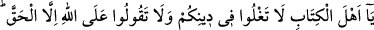
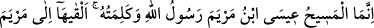
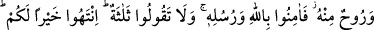
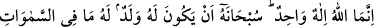
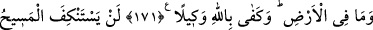
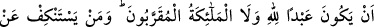
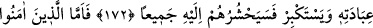
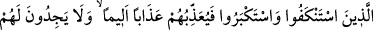
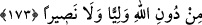

HAZRETİ ÎSÂ VE TESLİS
171- Ey ehl-i kitap! Dininizde aşırılığa düşmeyin ve Allah hakkında, gerçekten
başkasını söylemeyin. Meryem oğlu Îsâ Mesîh, ancak Allah’ın rasûlüdür, (o)
Allah’ın, Meryem’e ulaştırdığı «kün: Ol» kelimesi(nin eseri)dir, O’ndan bir ruhtur.
(O’nun tarafından gönderilmiş, yahut teyit edilmiş, yahut da Cebrâil tarafından
üfürülmüş bir ruhtur.) Şu halde Allah’a ve peygamberlerine îman edin. «(Tanrı)
üçtür» demeyin, sizin için hayırlı olmak üzere bundan vazgeçin. Allah ancak bir tek
ilahtır. O, çocuğu olmaktan münezzehtir. Göklerde ve yerde ne varsa hepsi
O’nundur. Vekil olarak Allah yeter.
172- Ne Mesih ne de Allah’a yakın melekler, Allah’ın kulu olmaktan geri dururlar.
O’na kulluktan geri durup büyüklenen kimselerin hepsini (Allah) yakında huzûruna
toplayacaktır.
173- İman edip sâlih amel işleyenlere (Allah) ecirlerini tam olarak verecek ve
onlara lütfundan daha fazlasını da ihsan edecektir. Kulluğundan yüz çeviren ve
kibirlenenlere gelince onlara acı bir şekilde azap edecektir. Onlar, kendileri için
Allah’tan başka ne bir dost ve ne de bir yardımcı bulurlar.
“Ey kitap ehli!” Buradaki hitap sadece hristiyanlaradır. Îsâ (a.s.)’ın şânını yüceltme
ve ulûhiyeti iddiâsında bulunma husûsunda “dininizde “aşırılığa düşmeyin,” haddi
aşmayın.
Bil ki, din ve mezhepte ileri giderek haddi aşmak, aşırılığa saplanmak, hoş